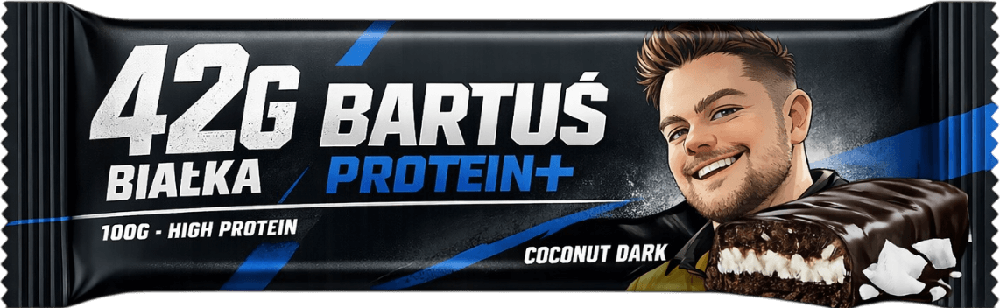

Gorzka czekolada przełamana nutą kokosa. 42 g białka na 100 g produktu to realne wsparcie regeneracji. Smak, który nie udaje deseru — tylko działa.

BARTUŚ PROTEIN+ to baton zaprojektowany z myślą o osobach trenujących siłowo, sportowcach oraz osobach budujących masę mięśniową. Wysoka zawartość białka wspiera regenerację i utrzymanie masy mięśniowej.
To nie słodycz. To funkcjonalny element planu treningowego.
Sprawdź ile białka potrzebujesz dziennie i ile batonów BARTUŚ PROTEIN+ to pokryje.
Przyjęto 2 g białka / kg masy ciała.
BARTUŚ PROTEIN+ to trzy dopracowane warianty smakowe stworzone dla osób aktywnych, które oczekują czegoś więcej niż zwykłej przekąski. Każdy baton zawiera 42 g białka w 100 g produktu, oferując realne wsparcie regeneracji i budowania formy — bez kompromisów w smaku.
Izolat białka serwatkowego (WPI), koncentrat białka mleka, masło kakaowe, kakao, aromaty naturalne, substancje słodzące (maltitol, sukraloza), orzechy arachidowe (Peanut Power), wiórki kokosowe (Coconut Dark).
| Białko | 42 g |
| Energia | 420 kcal |
| Tłuszcz | 18 g |
| Węglowodany | 28 g |
| Cukry | 3 g |
| Błonnik | 6 g |
| Sól | 0,4 g |